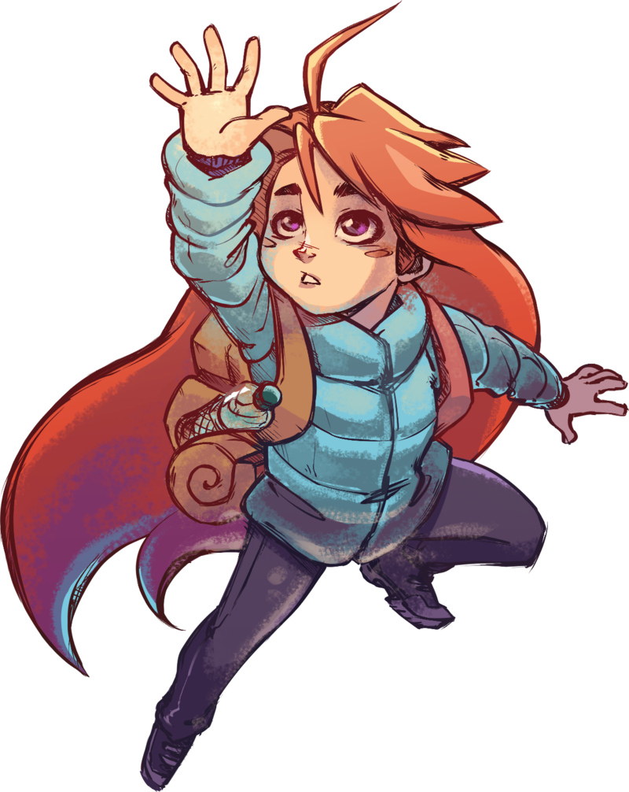
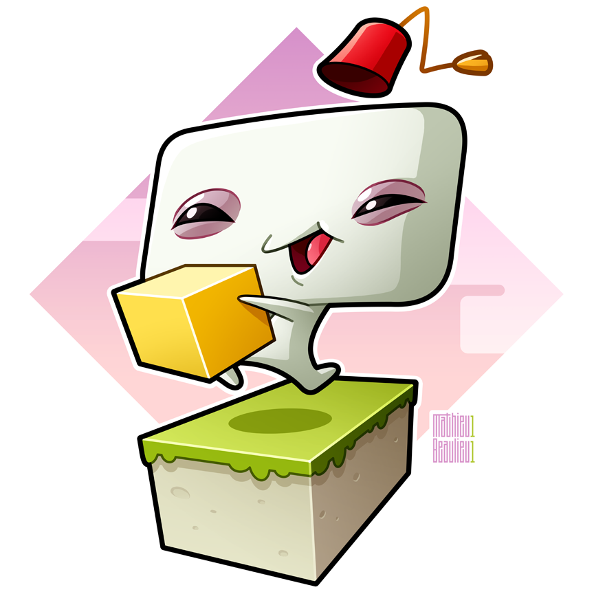
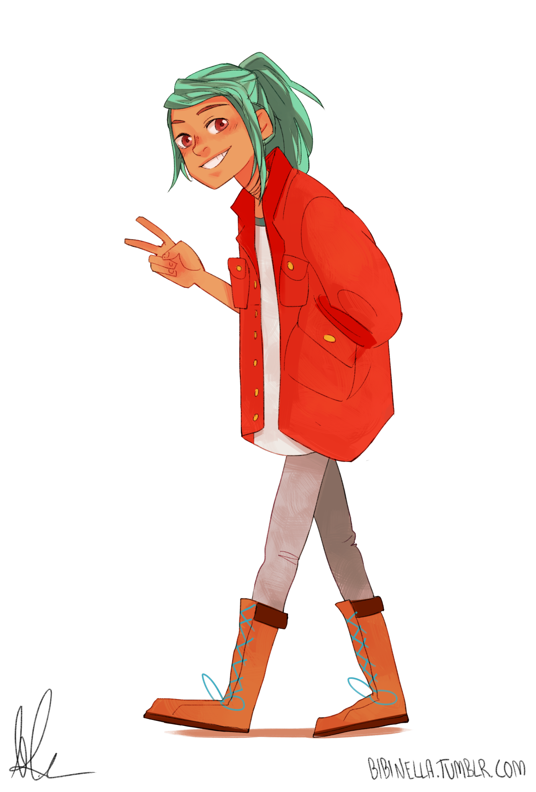
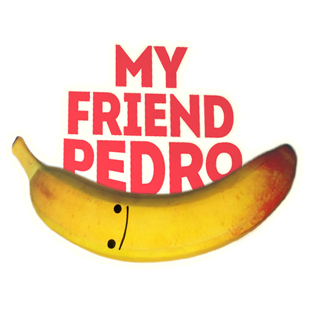
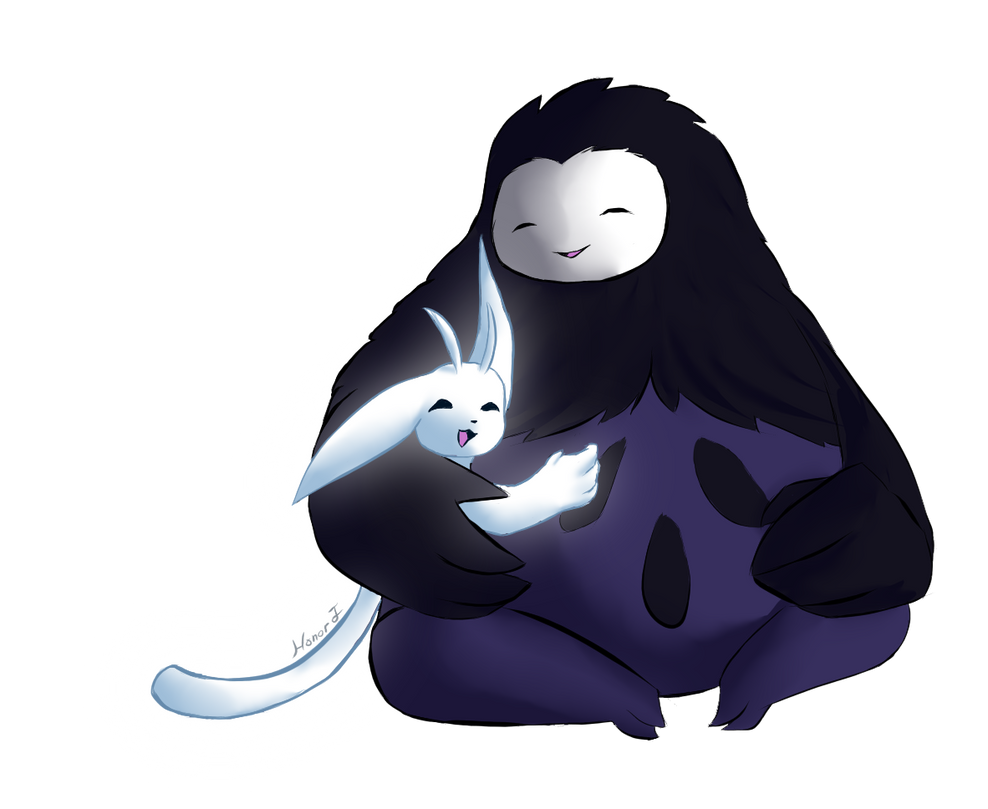
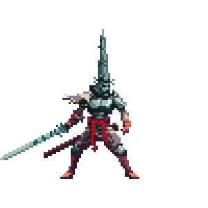

Celeste es un juego de plataformas en 2D, un desafío para los amantes de la dificultad. Interpretas a Madeline, una joven que busca escalar la montaña Celeste. El juego tiene un diseño de niveles muy bien diseñado, una historia emotiva y una banda sonora impresionante.

Fez es un juego de plataformas en 2D que te lleva a través de un mundo mágico lleno de peligros y acertijos. Interpretas a un personaje llamado Gomez que debe explorar un mundo en 3D cambiando de perspectiva. El juego tiene un diseño visual encantador y una banda sonora impresionante.

Oxenfree es un juego de aventuras en 2D te lleva a través de una isla misteriosa llena de secretos y fantasmas. Interpretas a una adolescente llamada Alex que debe descubrir los misterios detrás de la isla y enfrentarse a los peligros que se presentan. El juego tiene un diálogo bien escrito y una mecánica de juego única que te permite influir en la historia.

My Friend Pedro es un juego de acción en 2D donde juegas como un personaje que sigue las órdenes de una banana parlante llamada Pedro. La jugabilidad consiste en controlar a tu personaje mientras usas una variedad de armas y movimientos acrobáticos para eliminar enemigos. Con una estética visual única y deslumbrante, junto con una banda sonora impresionante, My Friend Pedro es un juego emocionante y frenético que te mantendrá enganchado desde el primer momento. Si buscas un juego de acción divertido y emocionante, My Friend Pedro es una excelente opción.

Ori and the Blind Forest es un juego de plataformas en 2D que tiene una estética impresionante y una banda sonora épica. Interpretas a Ori, una criatura mágica que debe explorar un mundo lleno de peligros y aventuras. El juego tiene un diseño de niveles desafiante y emocionante, así como una historia emotiva.

Blasphemous es un juego de acción y plataformas en 2D con un ambiente oscuro y religioso. En él, controlas a El Penitente, un guerrero que debe luchar contra enemigos siniestros y desbloquear secretos oscuros en el mundo de Cvstodia. El juego tiene un estilo visual impresionante que se inspira en la iconografía religiosa y el arte medieval, y ofrece una jugabilidad desafiante y satisfactoria, con una variedad de armas y habilidades para desbloquear. En resumen, Blasphemous es un juego emocionante con una trama intrigante y una estética visual impresionante